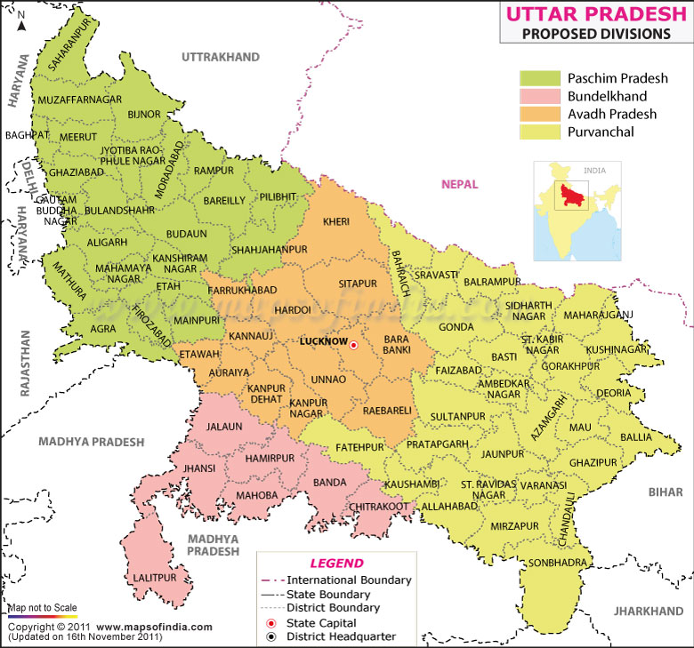
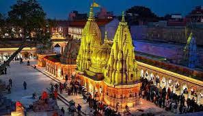
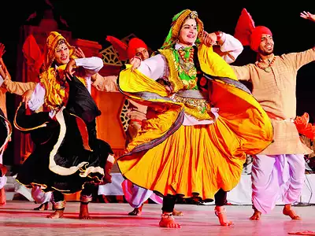
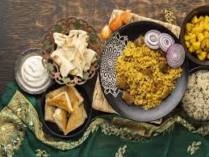

East Up
1. Introduction
The Culture of Uttar Pradesh is an Indian culture which has its roots in Hindi and Urdu literature, music, fine
arts, drama and cinema. Lucknow, the capital of Uttar Pradesh, has historical monuments including Bara Imambara
and Chhota Imambara, and has preserved the damaged complex of the Oudh-period British Resident's quarters, which
are being restored.
Varanasi's ghats (bathing steps along the river) draws pilgrims year-round who bathe in the Ganges River.
Mathura's celebrations of the Holi festival attract many tourists.
Thousands gather at Allahabad (Prayagraj) to take part in the annual Magh Mela festival on the banks of the
Ganges which is organised on a larger scale every 12th year, when it is called the Kumbha Mela, where over 10
million Hindu pilgrims congregate – one of the largest gathering of human beings in the world. Badaun is a
religiously significant city whose historical monuments and tombs attract thousand of tourists annually.
The historical towns of Sarnath and Kushinagar are not far from Varanasi. Gautama Buddha gave his first sermon
at Sarnath and died at Kushinagar; both are important pilgrimage sites for Buddhists. Also at Sarnath are the
Pillars of Ashoka and the Lion Capital of Ashoka, archaeological artefacts with national significance.[further
explanation needed] Ghazipur, 80 km from Varanasi, has Ganges Ghats and the Tomb of British potentate Lord
Cornwallis, maintained by the Archaeologic survey of India.

2. Architecture
The architecture of Uttar Pradesh demonstrates a diverse and eclectic combination of Buddhist, Hindu,
Indo-Islamic, and Indo-European architectural styles. Three of its architectural monuments—the Taj Mahal, the
Agra Fort, as well as the township of Fatehpur Sikri founded by the Mughal emperor Akbar—are designated UNESCO
World Heritage Sites. The architectural structures in Uttar Pradesh include ancient Buddhist stūpas and vihāras,
ancient Buddhist and Hindu monasteries, townships, forts, palaces, temples, mosques, mausoleums, memorials, and
other community structures. Uttar Pradesh's architectural structures also include various Hindu temples, Ghats,
etc. largely found in ancient cities like Benares (Varanasi), Brindaban (Vrindavan), Mathura, and Prayagraj
(Allahabad).

3. Dance and Music
During the Gupta and Harsh Vardhan eras, Uttar Pradesh was a centre for musical innovation. Swami Haridas was a
musician who championed Hindustani Classical Music. Tansen, a musician in Mughal Emperor Akbar's court, was a
disciple of Swami Haridas.
Kathak is a classical dance form from Uttar Pradesh. Wajid Ali Shah, the last Nawab of Awadh, was a patron and
champion of Kathak. Today, the state is home to two prominent schools of this dance form, Lucknow Gharana and
Banaras Gharana.
Music personalities including Naushad Ali, Talat Mehmood, Begum Akhtar , Anup Jalota, Shubha Mudgal, Bismillah
Khan, Ravi Shankar, Kishan Maharaj, Vikash Maharaj, Hari Prasad Chaurasia, Gopal Shankar Misra, Siddheshwari
Devi, Girija Devi and Sir Cliff Richard were originally from Uttar Pradesh.
The region's folk heritage includes songs called rasiya (especially popular in Braj), which celebrate the
mythological love of Radha and Krishna. These songs are accompanied by large drums known as bumb and are
performed at many festivals. Other folk dances or folk theater forms include Raslila, Swang, Ramlila (a dramatic
enactment of the entire Ramayana), Nautanki, Naqal (mimicry) and Qawwali.
The Bhatkhande Music Institute is situated in Lucknow.

4. Languages
The common state-language of Uttar Pradesh is standard Hindi. While standard Hindi (Khari boli) is the official
language, several regional Hindi 'dialects' are spoken in the state including: Awadhi, Bhojpuri, Braj, Kannauji,
Bagheli and Bundeli, as well as several local dialects that do not have a formal name. Urdu is prominent in
Uttar Pradesh as Lucknow was once the centre of Indo-Persianate culture in north India. The language of Lucknow
("Lakhnavi Urdu") is a form of high literary Urdu.

5. Tourism
Uttar Pradesh attracts large number of visitors, both national and international; with more than 71 million
domestic tourists (in 2003) and almost 25% of the All-India foreign tourists visiting Uttar Pradesh, it is one
of the top tourist destinations in India. There are two regions in the state where a majority of the tourists
go, the Hindu pilgrimage circuit and the Agra circuit.
The pilgrimage circuit includes the most religiously prestigious of the cities considered holy in Hinduism on
the banks of the Ganges and Yamuna, rivers which are also considered sacred: Varanasi, Ayodhya (in mythology the
birthplace of Rama), Mathura (in mythology the birthplace of Krishna), Vrindavan (in mythology where Krishna
spent his childhood), and Allahabad (Prayagraj) (the confluence or 'holy-sangam' of the Ganges-Yamuna
rivers).[citation needed]
The city of Agra is near three World Heritage Sites: Taj Mahal, Agra Fort and the nearby Fatehpur Sikri.[1] Taj
Mahal is a mausoleum built by Mughal Emperor Shah Jahan in memory of his beloved wife, Mumtaz Mahal. It is cited
as "the jewel of Muslim art in India and one of the universally admired masterpieces of the world's heritage".
Agra Fort is about 2.5 km northwest of its much more famous sister monument, the Taj Mahal. The fort can be more
accurately described as a walled palatial city. Fatehpur Sikri was the 16th-century capital city near Agra,
built by the Mughal emperor Akbar the Great, whose mausoleum is in Agra. Dayal Bagh in Agra is a modern-day
temple and tourist site with lifelike marble sculptures. Agra's attractions alsoinclude Asia's largest spa as
well as Asia's second 6D theatre.[citation needed]
Prem Mandir, Vrindavan, is called the "temple of love."
Some of the main natural protected areas in Uttar Pradesh are:-
• Dudhwa National Park is one of the best tiger reserves in the country.
• Pilibhit Tiger Reserve – home to the Tiger Reserve.situated in district Pilibhit.
• Sandi Bird Sanctuary – houses about 20,000 migratory birds annually.
• Katarniaghat Wildlife Sanctuary – the most concentrated sanctuary in India with a large population of tigers
as well as leopards – situated in Bahraich and bordering Nepal is also worth a visit.
Some areas require a special permit for non-Indians to visit.

6. Dress
The people of Uttar Pradesh wear a variety of native- and Western-style dress. Traditional styles of dress
include colourful draped garments – such as sari for women and dhoti or lungi for men – and tailored clothes
such as salwar kameez for women and kurta-pyjama for men. Men also often sport a headgear like topi or pagri.
Sherwani is a more formal male dress and is frequently worn along with chooridar on festive occasions.
European-style trousers and shirts are also common among men. Young adults are most commonly found in jeans and
t-shirts
7. Arts and crafts
Uttar Pradesh's centres of art and craft include:
• Agra, home since the Mughal era to Mughal crafts, including the Pietra Dura, still practised today.
• Aligarh is a centre of Zari work, (a type of fabric decoration), 'Jhumka' – an intricate ear-rings or
ear-pendants, Manja and Surma (Kohl (cosmetics)).
• Firozabad, the city of bangles, is also a hub for glasswork, some of which is exported.
• Kannauj is a producer of perfumes, scents and rose water and also traditional tobacco products.
• Khurja produces ceramics pottery.
• Lucknow, the capital, is a centre of cloth work and embroidery (chikan) on silk and cotton.
• Allahabad (Prayagraj) is home to the National Institute of Art & Craft College.
• Bhadohi produces carpets, a craft which dates back to the 16th century during the reign of Mughal Emperor,
Akbar[2] Bhadohi carpets received the Geographical Indication (GI) tag in 2010,[3] and it is one of the highest
revenue-generating districts of UP.
• Moradabad produces metal-ware, especially brass artefacts.
• Pilibhit produces wooden footwear (locally called Paduka or Khadaon) and also flutes made of wooden pipes
which are exported to Europe, America and other countries.
• Saharanpur produces wood-carving items.
• Varanasi Mubarakpur, Azamgarh produces silk and Banarasi saris.
• Gorakhpur produces terracotta statues and handcraft cloths.
• Nizamabad produces black pottery.
• Mau produces India Jajjary.
8. Festivals
Many festivals are religious in origin, although several of them are celebrated irrespective of caste and creed.
Hindu festivals include Diwali, Holi and Dussehra, which are also observed by Jains. Ten days of Ramlila takes
place during the period of navratri and on the 10th day an effigy of Raavan is burnt. Durga puja is also
observed in many parts of the state during navratri. Eid e milad un nabi, Eid, Bakreed and the birthday of Ali
ibn Abitalib are recognised official Muslim religious festivals. Mahavir Jayanti is celebrated by Jains, Buddha
Jayanti by Buddhists, Guru Nanak Jayanti by Sikhs and Christmas by the Christians.[4] Other festivals include
Ram navami, Chhath puja, Krishna-Janmashtami, Mahashivratri, etc